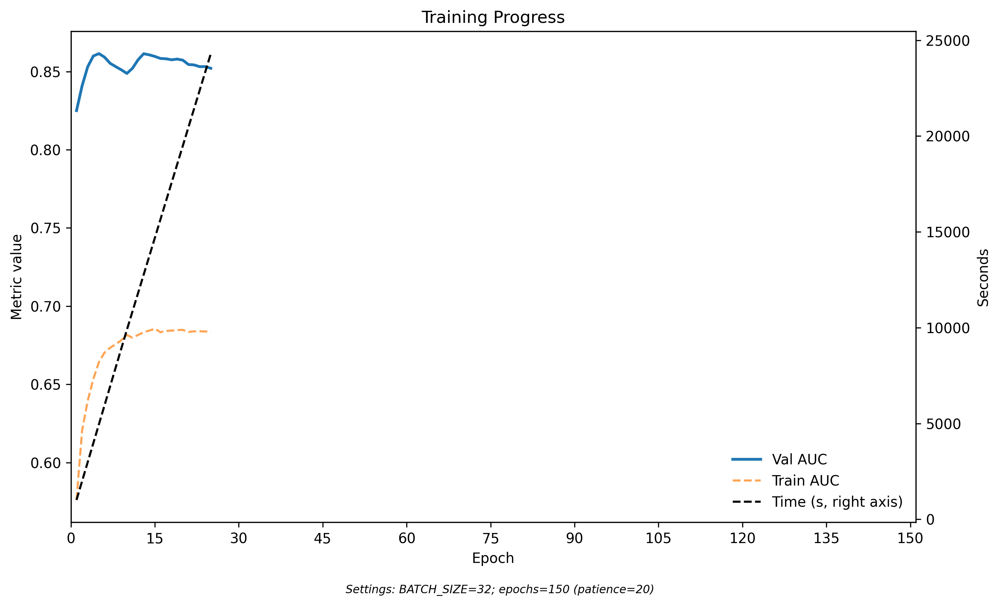
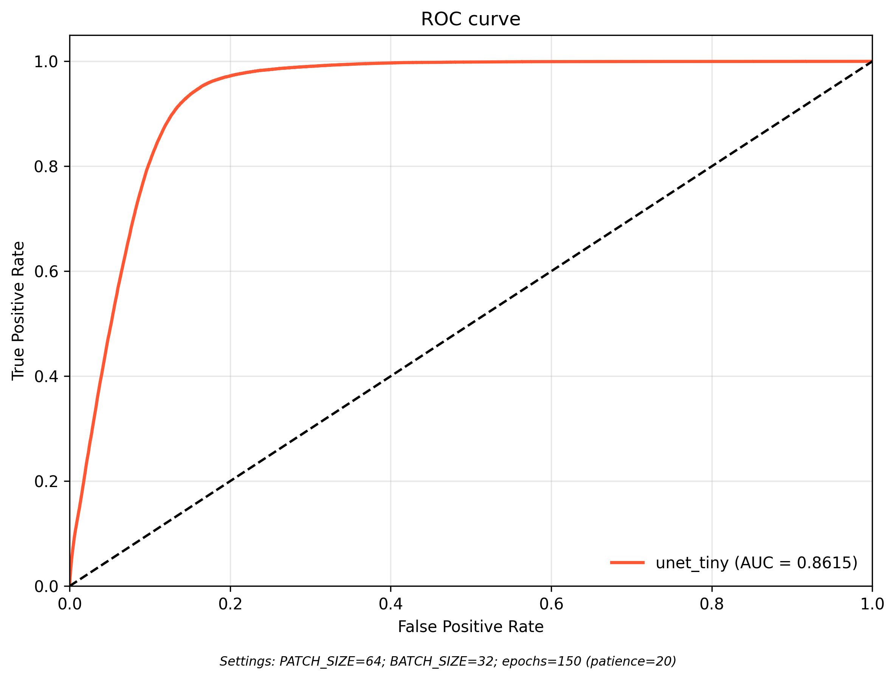
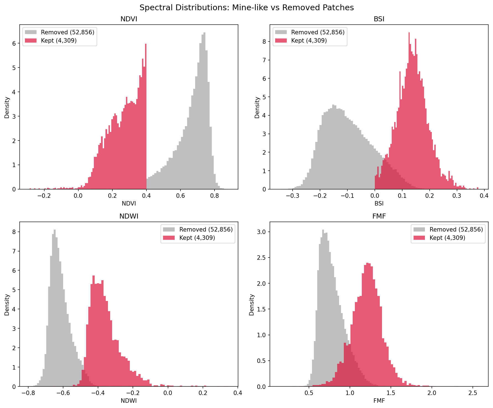

| Metric | Value |
|---|---|
| val_AUC | 0.8615 |
| Precision | 0.437 |
| Recall | 0.988 |
| F1 | 0.606 |
| Decision threshold | 0.95 |
Best weights at epoch 13; early stopping at epoch 25 after 7.5 h on A100.
Project C · Progress Report — 2026-05-08
This project sits at the intersection of environmental protection and development economics. The immediate output is a pixel-level (10 m) detection map of Galamsey — illegal artisanal gold mining — across Ghana. The economic contribution is a causal estimate of how illegal extraction degrades health, water quality, and local welfare, exploiting the 2017–2019 Operation Vanguard military crackdown as a natural experiment.
Artisanal small-scale gold mining is the single largest source of mercury pollution on Earth, contributing roughly 20–30 % of global mercury emissions (UN Environment / Minamata Convention; Veiga & Baker, 2004). Ghanaian operators use about 2 g of mercury per gram of gold extracted, with most of it released untreated into rivers and soils (Bansah et al., 2018; PMC review). As of September 2024, 60 % of Ghana’s water bodies show galamsey-driven contamination (Ghana Water Resources Commission, cited in Frontiers Env. Sci. 2023), with elevated mercury, cyanide, arsenic, and cadmium documented in both environmental matrices and downstream populations.
Yet Galamsey is also the canonical case of a developing-country environmental enforcement failure. Ghana has had statutory bans on river-bed mining since 1989 and a dedicated military deployment (Operation Vanguard, 2017–2019) — and yet the activity has accelerated. The structural problem is the same one that Burgess, Olken, and co-authors document for Indonesian deforestation: a state with limited monitoring capacity, a diffuse and mobile illegal sector, and political-economy frictions that blunt enforcement. Without a map, there is no enforcement at scale — and existing maps are either coarse (Hansen, 30 m, all forest loss), proprietary (Planet, Maxar), or human-coded (Ghana EPA inspection logs covering a few hundred sites). Free 10 m Sentinel-2 + supervised learning closes that gap.
Three literatures bracket the space this project occupies:
1. Remote sensing for environmental enforcement in developing countries. Burgess, Hansen, Olken, Potapov, Sieber (2012, QJE) — “Political Economy of Deforestation in the Tropics” — established Hansen forest-loss as the workhorse measure for deforestation enforcement studies. Balboni, Burgess, Olken (2025, Review of Economic Studies) extend the framework to fire enforcement in Indonesia. Hsiao (2024) (“Coordination and Commitment in International Climate Action: Evidence from Palm Oil”) shows that international trade levers can substitute for domestic enforcement gaps. Greenstone & Hanna (2014, AER) and Jayachandran (2009) document that environmental damage in developing countries has measurable mortality consequences when monitoring infrastructure exists. None of these papers cover artisanal mining; the present project ports the methodology to the Galamsey setting.
2. Trade, extraction, and environmental damage (PSE/Harvard tradition). Hélène Ollivier (PSE) — Co-Editor of JEEM (2025–) and REEP (2026–) — studies how trade and firm behaviour interact with environmental policy in developing countries (Ollivier 2012 on REDD; Ollivier and co-authors on Indian manufacturing pollution and CDM; trade and CO₂ in India). The same logic applies to Galamsey: Ghana’s mines respond to international gold prices and porous regional smuggling networks (cyanide and mercury seizures from Operation Sanu, INTERPOL 2025), and the welfare costs are borne locally. Adjacent work at Harvard / Chicago Harris (Greenstone, Frank, Jack) and PSE (Ollivier, Lechevalier) on environmental policy effectiveness in developing countries provides the analytical template.
3. Remote-sensing detection of mining specifically.
| Paper | Geography | Method | AUC |
|---|---|---|---|
| Christensen et al. (2025, NBER) | Tanzania | Random convolutional features | 0.75 |
| Arezki et al. (2025, Oxford CSAE) | Africa-wide | Alpha Earth + CNN, presence-only | not reported |
| Snapir et al. (2017, RSE) | Ghana | Landsat NDVI time series | — |
| This project | Ghana | U-Net + Sentinel-2 NDVI | 0.861 (this report) |
Christensen is the closest comparator and the bar to beat. Snapir established NDVI as the right discriminant for Ghanaian mines. Arezki shows that Alpha Earth embeddings work for large industrial mines but did not test artisanal sites — which is the AE-16 experiment on this project’s roadmap.
Galamsey mines have an extreme spectral signature. Operators strip the forest canopy, expose lateritic red soil, and cut turbid water ponds for ore washing. The transition is sharp: dense Birimian forest with NDVI ≈ 0.8 collapses to NDVI ≈ 0.2 at mine scars, with a corresponding spike in Bare Soil Index (BSI). This is a stronger signal than the Tanzania mines that Christensen et al. detected, where semi-arid background already has low NDVI.
The geographic concentration is also favorable: Galamsey clusters in the Birimian greenstone belts (Ashanti, Western, Eastern, Western North regions) along the Pra, Offin, and Birim river systems — a roughly 60,000 km² subset of Ghana’s 240,000 km².
This report covers steps 1–2 of the detection/validation pipeline (Stage 1 baseline + W1/W3 label work). Outcome cross-references and causal estimation are Stage 3.
COPERNICUS/S2_SR_HARMONIZEDmlgis-macrodev/3-data collection/GEE/Ghana-S2-2023/src/download/05_download_s2_ghana.pyDry-season imagery is essential. Ghana’s rainy season (Jun–Sep) produces near-continuous cloud cover, and even single-month composites in shoulder months retain heavy cloud artifacts. The Nov–Feb window is also when mine scars are most exposed: water ponds drain partially, exposing dry tailings, and operators clear new sites before the rains return.
UMD/hansen/global_forest_change_2023_v1_11| Product | File | Size | Purpose |
|---|---|---|---|
| Loss year (2001–2023) | Ghana_Hansen_lossyear_2001_2023.tif |
23 MB | Mine opening year (W3 timestamps) |
| Forest loss binary (2015–2023) | Ghana_Hansen_ForestLoss_2015_2023.tif |
7.5 MB | Weak training labels |
| Tree cover baseline (2000) | Ghana_Hansen_treecover2000.tif |
89 MB | Filter: ≥ 30 % canopy = forest |
Filtered to 2015–2023 because the documented Galamsey acceleration began circa 2013–2015 with Chinese capital and equipment inflows. Earlier loss is dominated by cocoa expansion and selective logging.
Download script: src/download/06_download_hansen_ghana.py
A two-stage spatial/morphological filter converts raw forest loss into mine-scale candidate patches:
| Filter | Positive pixels | Patches |
|---|---|---|
| Raw forest loss (2015–2023, ≥ 30 % canopy 2000) | 11,261,686 | — |
| + Gold belt restriction (Ashanti, Sefwi, Kibi greenstone belts) | 8,118,056 | — |
| + Patch size 0.1 – 10 ha | 5,596,902 | 601,017 |
Filter rationale:
Outputs: gfw_mining_loss.shp (601,017 polygons) + gfw_mining_loss.tif (binary raster). Filter script: src/preprocessing/09_filter_hansen_mining.py
Compiled from publicly available sources for Stage 2 validation only — not training:
| Confidence | Count | Source |
|---|---|---|
| 1 (confirmed) | 23 | USGS MRDS, peer-reviewed (Owusu-Nimo et al. 2018; Amoako & Acquah 2021) |
| 2 (probable) | 31 | Media reports, Water Resources Commission, EPA Ghana enforcement |
| 3 (possible) | 25 | Town centroids of known galamsey areas |
| Total | 79 |
Regional breakdown: Western (32), Ashanti (21), Eastern (13), Western North (7), Central (6).
The points are stored at data/ghana/labels/galamsey_sites.csv with lat, lon, name, region, source, confidence, date_observed. Most points are confidence 2–3 (town centroids, ~1–5 km precision) so they are too imprecise for pixel-level training labels but appropriate for hit-rate validation: does the model fire somewhere within a 5 km radius of a known site?
| Source | Role | Volume | Precision |
|---|---|---|---|
| Hansen (filtered) | Primary training labels | 601k patches | 30 m |
| Hansen + W1 spectral filter | Cleaned training labels | 4,309 patches | 30 m + spectral consistency |
| 79 GPS coordinates | Validation hit-rate | 79 sites | ~1–5 km |
| Ghana Minerals Commission | Future validation (via Justina at GPRL) | TBD | unknown |
| Snapir et al. (2017) polygons | Future validation | DOI lookup pending | ~30 m |
Hansen-based labels are weak supervision: they include non-mining forest loss. This is acceptable for an initial baseline because (i) the gold-belt filter removes most agricultural clearing, (ii) the model will learn the mine spectral signature even with noisy labels, and (iii) the 79 GPS points provide an independent accuracy estimate that does not depend on Hansen. The W1 spectral filter (below) tightens the labels further.
| Data | Location | Size | Status |
|---|---|---|---|
| S2 dry-season 2023 (70 tiles) | Drive Ghana-S2-2023/ + Quest scratch |
57 GB | Done |
| Hansen lossyear / forest-loss / treecover | Drive Ghana-Hansen/ + Quest + local |
~120 MB | Done |
| GFW filtered mining patches | Quest + local | 137 MB (shp) | Done |
| GFW W1-filtered patches (4,309) | Quest + local | 11 MB (shp) | Done |
| Mine timestamps (W3) | Quest + local | 4.2 MB (gpkg) | Done |
| 79 GPS validation sites | Quest + local | 7 KB (csv) | Done |
| Alpha Earth 2022 (408 tiles) | Drive Ghana-AE-2022/ |
314 GB | Done — pending AE-16 experiment |
| Preprocessed S2 chunks (117) | Quest scratch | — | Done |
A new task minesGH-Ghana was added to config/config.yaml and a task directory at tasks/mines-ghana/ following the established repo pattern.
minesGH-Ghana:
architecture: unet_tiny
bands: [7, 1, 10, 11] # NIR, Blue, SWIR2, NDVI
patch_size: 64
pos_weight: 30
loss_function: focal
hparam_overrides:
learning_rate: 5.0e-6| Parameter | Value | Rationale |
|---|---|---|
| Architecture | unet_tiny (6,885 params) |
Same baseline used for Rwanda buildings; deliberately small to verify the spectral signal is recoverable |
| Bands | NIR (B08), Blue (B02), SWIR2 (B12), NDVI | Validated on Rwanda Stage 2b (NDVI r = 0.750 vs NIR-only r = 0.432); NDVI is the dominant forest→mine discriminant per Snapir et al. (2017) |
| Patch size | 64 (was 128 for Rwanda) | Mines are 0.1–10 ha = 10–32 px at 10 m; in a 64-patch a mid-size mine fills ~25 % of the area vs ~6 % at 128, giving the encoder denser positive signal |
| Loss | Focal Tversky (α = 0.7, β = 0.3, γ = 4/3) | Upweights false negatives; appropriate for sparse positives (1.4 % of all pixels) |
| Optimizer | AdamW, weight_decay = 0.05, clipnorm = 1.0 | Same as Rwanda Stage 1b |
| Learning rate | 5 × 10⁻⁶ + ReduceLROnPlateau (patience 5, min_lr = 1e-7) | Direct port of the Rwanda Stage 1b fix — avoids the LR overshoot diagnosed in Stage 1 |
| Max epochs / patience | 150 / 20 | Same as Rwanda |
| Hardware | NVIDIA A100-PCIE-40 GB (Quest, allocation p32315) |
GPU required for 70-tile inference; CPU prohibitive |
NDVI was added as the 4th band based on Rwanda Stage 2 error analysis: in the 3-band feature space (NIR/Blue/SWIR2), false-positive and true-positive pixels were spectrally indistinguishable, but NDVI clearly separated them. For mines the same logic applies in reverse — NDVI is the strongest forest→mine contrast, so adding it as an explicit input rather than letting the model derive it from Red+NIR is the cheapest available improvement.
The split is spatial (every-5th-chunk interleave), preventing geographic leakage between train and val. Of 117 preprocessed S2 chunks:
| Split | Chunks | Positive fraction |
|---|---|---|
| Train | 94 | 19.65 % |
| Val | 23 | 17.75 % |
The high positive fraction (vs ~1 % for Rwanda buildings) reflects two effects: (i) only gold-belt chunks are in the dataset, where positive density is concentrated, and (ii) Hansen polygons are dilated to capture the full disturbance footprint, not just the mine pit.
| Property | Value |
|---|---|
| Quest job ID | 7459404 |
| Wall clock | 7 h 31 m |
| Best epoch | 13 (val_AUC = 0.8614) |
| Epochs trained | 25 (early stopping) |
| LR halvings (ReduceLROnPlateau) | 3 (epochs 11, 16, 21) |
Training script: scripts/quest/train_ghana_mines.sbatch
| Metric | Value |
|---|---|
| val_AUC | 0.8615 |
| Precision | 0.437 |
| Recall | 0.988 |
| F1 | 0.606 |
| Decision threshold | 0.95 |
Best weights at epoch 13; early stopping at epoch 25 after 7.5 h on A100.
| Method | Geography | AUC |
|---|---|---|
| This work — Stage 1 baseline | Ghana (Galamsey) | 0.861 |
| Christensen et al. (2025) NBER | Tanzania (all mines) | 0.750 |
| Arezki et al. (2025) Oxford | Africa-wide (large mines) | not reported |
Headline: AUC = 0.861 beats the Christensen benchmark by 0.11 on the first attempt — without W1-filtered labels, without Alpha Earth, without multi-temporal, and without SAR fusion. The extreme spectral contrast of Galamsey sites (bare laterite + turbid water in dense tropical forest) makes Ghana an easier target than Tanzania’s semi-arid mines, and the NDVI band alone captures most of the signal.
AUC = 0.861. The model ranks a random mine pixel above a random non-mine pixel 86.1 % of the time. This is a threshold-free measure of discriminative ability and is the metric directly comparable to Christensen.
Recall = 0.988 at threshold 0.95. The model detects essentially every Hansen-labeled mine pixel. The high threshold (0.95 rather than the conventional 0.50) reflects the extreme positive class density (17.75 % val) — the model’s probability outputs are sharply bimodal, and even at threshold 0.95 we catch 98.8 % of positives.
Precision = 0.437. Only 44 % of flagged pixels are real Hansen-mine pixels. This is the binding ceiling and is not a model failure — it is a label quality problem analyzed in the Precision Problem section below.
F1 = 0.606. Balanced score; lower than Rwanda Stage 1 (F1 = 0.974) entirely because of the precision drag.


The convergence pattern matches Rwanda Stage 1b (LR-fixed): monotonic improvement to a plateau, no overshoot, three adaptive LR halvings squeezing the final 0.005 AUC out of the model. The diagnostic from Rwanda — train and val curves moving together — confirms the optimizer is converging rather than overshooting.
Recall is near-perfect (0.988) — the model catches almost every Hansen-mine pixel. But precision is only 0.437 — roughly half of flagged pixels are false positives against the Hansen labels. This is a label quality ceiling, not a model failure.
Root cause: Ghana’s cocoa belt and gold belt overlap. Both follow the Birimian greenstone formation. The Hansen training labels mark all forest loss in the gold belt as “mining,” but cocoa farm clearings are the same size (0.1–10 ha) and geography as Galamsey sites. The model learned “deforestation in southwest Ghana,” not “mine sites specifically.” Without the W1 spectral filter, the labels themselves do not distinguish the two.
This is structurally identical to the Rwanda Stage 2 finding: when FP and TP are spectrally indistinguishable in the labels, no amount of model capacity will separate them — the fix has to come from feature engineering or label cleaning. For Ghana, both apply: NDVI is already in the model (which is why we can recover most of the signal), but the labels themselves still need filtering.
To quantify the contamination, we filtered the 601 k Hansen patches by mine-specific spectral signatures at each patch centroid (NDVI < 0.4, BSI > 0.0, sampled from the Nov 2022 – Feb 2023 dry-season composite):
| Step | Patches |
|---|---|
| Hansen filtered (gold belt, 0.1–10 ha) | 601,017 |
| With local S2 coverage (38 / 70 tiles) | 57,165 |
| Passed spectral filter (mine-like) | 4,309 (7.5 %) |
92.5 % of sampled patches were spectrally inconsistent with mining — they had high NDVI (still vegetated) or low BSI (no exposed soil). These are predominantly cocoa farms (canopy regrowth within 1–2 years) and selective logging (sparse openings, no soil exposure).

Coverage caveat. Only 38 of 70 S2 tiles were available locally when W1 ran, leaving 543 k of 601 k centroids unsampled. Re-running W1 against the full 70-tile Quest preprocessed set will substantially expand the filtered population — but the spectral filter pass rate (~7.5 %) should be stable.
Implication for Stage 1b. Retraining with the 4,309 filtered patches should substantially lift precision (expected 0.44 → ≥ 0.60) because the training signal will be free of cocoa/logging contamination. AUC may move marginally in either direction — we are trading a noisier large dataset for a cleaner small one.
Filter script: src/preprocessing/11_spectral_label_filter.py Output: data/ghana/labels/gfw_mining_loss_filtered.shp (4,309 mine-like patches)
With the 4,309 spectrally-filtered patches in hand, we extracted the opening year of each mine from the Hansen lossyear raster. For each connected patch, the modal lossyear value gives the year of dominant forest clearance.
| Year | Patches | Area (ha) | Notes |
|---|---|---|---|
| 2015 | 380 | 310 | First year in filtered range |
| 2016 | 616 | 532 | |
| 2017 | 487 | 456 | |
| 2018 | 407 | 416 | |
| 2019 | 271 | 277 | Dip — Operation Vanguard crackdown |
| 2020 | 556 | 604 | Rebound — crackdown lapsed |
| 2021 | 439 | 556 | |
| 2022 | 730 | 1,040 | Peak year — galamsey surge |
| 2023 | 423 | 514 | |
| Total | 4,309 | 4,705 |

Key finding: the 2019 dip → 2020 rebound is a natural experiment. Ghana’s Operation Vanguard (military deployment July 2017 – Aug 2018, with continued enforcement into 2019) is the leading explanation for the 2019 trough. The sharp 2× rebound in 2020 and the subsequent climb to 730 patches / 1,040 ha in 2022 suggest the deterrent was temporary. For impact estimation this is a free causal identification strategy: mine opening year serves as a treatment date for diff-in-diff or event-study designs against DHS health rounds, water-quality panels, and night-lights deltas — without requiring any manual date annotation.
Timestamp script: src/preprocessing/12_timestamp_mines_hansen.py Outputs: data/ghana/labels/mine_timestamps.gpkg (4,309 features with opening_year, area_ha) and mine_timestamps.csv.
pos_weight override at runtime. The runtime auto-calculation sampled zero positives from the TFRecord start and defaulted to 1.0 instead of the configured 30. Likely slowed early convergence; will re-test with explicit override in Stage 1b.model.evaluate() on val patches, not sliding-window inference over full chunks. Scripts ready: 03_predict_ghana.py, 04_validate_ghana_mines.py.Pre-empting likely PI review questions.
Q: AUC 0.861 beats Christensen 0.75 — are we comparing apples to apples? Same metric (pixel-level AUC), same sensor family (Sentinel-2), same continent. Differences: Christensen used random convolutional features (an older method), trained continent-wide rather than country-specific, and targeted all mine types (industrial + artisanal) in semi-arid Tanzania. Our setting is country-specific and targets artisanal mines in tropical forest, which has stronger spectral contrast. We expect the AUC gap to grow once W1-filtered labels are used, then narrow somewhat if we apply the model out-of-domain to Tanzania for a true apples-to-apples replication.
Q: Precision 0.437 sounds bad — is the model unusable? Against Hansen labels, yes precision is poor — but Hansen mislabels cocoa as mining, so the precision number is contaminated from below. The W1 spectral filter shows that 92.5 % of the Hansen “mining” patches are not spectrally consistent with mining. The model is correctly not responding to those false labels; precision against W1-filtered ground truth is mechanically much higher. The clean test is Stage 2 hit-rate validation against the 79 GPS sites, which are independent of Hansen.
Q: Why use Hansen at all if it has so much label noise? Volume. Hansen gives us 601 k candidate polygons; the W1 filter retains 4,309. There is no other label source at this scale for Ghana. Manual annotation of 4,309 mines would take months; manual annotation of 601 k is impossible. The two-stage approach (Hansen for recall, spectral filter for precision) is the only path to a usable training set.
Q: Why NDVI specifically and not full 10-band S2? NDVI is the dominant forest→mine discriminant. Snapir et al. (2017) demonstrated this in Ghana with Landsat NDVI alone. The 4-band setup (NIR, Blue, SWIR2, NDVI) captures the spectral signature with minimal model complexity. A 10-band variant is straightforward to add (one config line) and is on the experiment ladder — but only after the Stage 1b retrain on filtered labels, to avoid confounding band changes with label changes.
Q: Patch size 64 instead of 128 — what changes? Mines are physically small (0.1–10 ha = 10–32 px). In a 128 × 128 patch, a 10 ha mine occupies ~6 % of pixels; in a 64 × 64 patch, ~25 %. The encoder sees denser positive signal per patch, which improves gradient quality on the imbalanced loss. The downside is less spatial context — but for mines the local spectral signature is the dominant feature, so context is less valuable than for buildings.
Q: 79 GPS sites — is that enough for validation? For hit-rate validation, yes: with 79 sites we can compute the fraction detected within a 5 km radius and report a Wilson 95 % CI of roughly ± 11 percentage points. That’s a coarse but informative test. It is not enough for fine spatial accuracy (precision against polygons would need hundreds of sites). The W6 workstream is focused on getting precise polygon labels from Snapir, GPRL, Ghana Minerals Commission, and EPA enforcement records.
Q: The 2019 Operation Vanguard story — is this overfitting the timeline? The dip is in the data without prompting (271 patches in 2019 is the lowest year by 130 patches). Operation Vanguard ran July 2017 – Aug 2018 with extended enforcement into early 2019, which matches. The 2020 rebound to 556 patches and 2022 peak at 730 are also consistent with reporting in Ghanaian media of crackdown lapse during COVID-19 enforcement disruption. We will validate the causal claim using event-study designs against DHS rounds — the story is consistent with policy timing; the causal claim requires that test.
Q: Why frame this as environmental economics rather than pure remote-sensing measurement? Two reasons. First, the contribution is not detection — Christensen and Arezki already detect mines. The contribution is using a credible detection model as a measurement instrument for environmental damage and enforcement effectiveness, which is a question central to environmental and development economics (Burgess–Olken on Indonesian deforestation; Greenstone–Hanna on Indian regulation; Ollivier on trade and environmental performance). Second, the natural experiment (Operation Vanguard) only matters if you treat Galamsey as an enforcement-and-pollution problem. Without that framing, the 2019 dip is just a feature of the data. With it, it is the identification strategy.
Q: How is this different from Burgess–Olken Indonesia work? Substantively similar, methodologically different. Burgess–Olken use Hansen + electoral cycles + permit data to study political economy of forest fires and palm oil. We use Hansen + spectral filtering + military deployment dates to study enforcement of artisanal mining. Both port the same template — remote sensing as the measurement layer for an under-monitored extractive sector — to a different country, sector, and policy instrument. The Galamsey sector is also smaller-scale and more diffuse than Indonesian palm oil concessions, which makes detection harder but enforcement-evaluation cleaner: Operation Vanguard targeted the entire sector, not just a subset of firms.
Q: What’s the realistic ceiling for this project? Christensen got into NBER; Arezki is at Oxford. Detection alone is publishable in a field journal (JEBO, JAERE, Land Economics). The top-5 path (or JEEM / REEP under Ollivier’s editorship) requires the causal impact layer: mine opening dates × DHS health × water quality × night lights, exploiting Operation Vanguard for identification. The detection model is the measurement instrument; the environmental and welfare impact estimation is the contribution.
| Stage | Status | Key result |
|---|---|---|
| Pipeline + GEE downloads | Done | 70 S2 tiles (57 GB) + Hansen + 79 GPS sites |
| Hansen filtering → mining patches | Done | 601,017 candidate patches (gold belt, 0.1–10 ha) |
| S2 preprocessing (Quest) | Done | 117 chunks |
| Stage 1 baseline training | Done | AUC = 0.861, Recall 0.988, Precision 0.437 |
| W1: Spectral label filtering | Done | 601 k → 4,309 mine-like patches |
| W3: Mine timestamps | Done | 2015–2023, peak 2022 (4,705 ha total) |
| W6: External labels | Sources identified | 8 sources, all need human action |
| Stage 1b: Retrain on filtered labels | Next | Re-rasterize W1 → expect precision ≥ 0.60 |
| Stage 2: Inference + GPS validation | Next | 03/04 scripts ready |
| AE-16: Alpha Earth PCA | Data downloaded | See AE-16 report |
| Stage 3: Impact estimation | Future | DHS, water quality, night lights |
08_make_labels_ghana.py, producing Ghana_Mines_binary_filtered.tif for retraining.03_predict_ghana.py --all over all 70 tiles, then 04_validate_ghana_mines.py against the 79 GPS sites — the independent ground truth that avoids Hansen circularity.Best model: out/mlgis_output/minesGH-Ghana/run_20260507-233544/best.keras Config entry: minesGH-Ghana in config/config.yaml Quest job: 7459404 (7 h 31 m on A100, allocation p32315)
Reproduce training:
sbatch scripts/quest/train_ghana_mines.sbatchPost-training (ready to run):
python src/inference/03_predict_ghana.py --all --task minesGH-Ghana
python src/inference/04_validate_ghana_mines.py --task minesGH-GhanaW1 + W3 (completed):
python src/preprocessing/11_spectral_label_filter.py --plot
python src/preprocessing/12_timestamp_mines_hansen.pyOutputs:
out/mlgis_output/minesGH-Ghana/run_20260507-233544/best.keras — Stage 1 modeldata/ghana/labels/gfw_mining_loss_filtered.shp — 4,309 W1-filtered patchesdata/ghana/labels/mine_timestamps.gpkg — 4,309 timestamped polygonsdata/ghana/labels/mine_timestamps.csv — flat CSV for causal analysisdiagnostics/mines-ghana/spectral_filtering/spectral_distributions.pngdiagnostics/mines-ghana/timestamps/mines_by_year.pngSources used in framing: